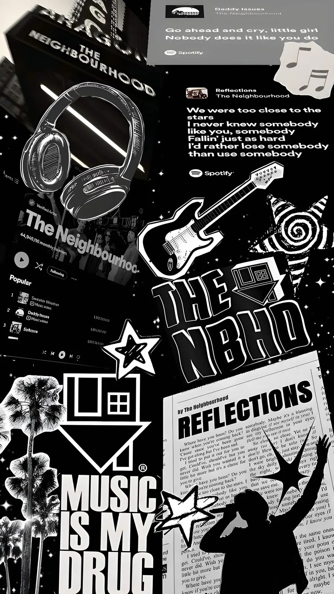
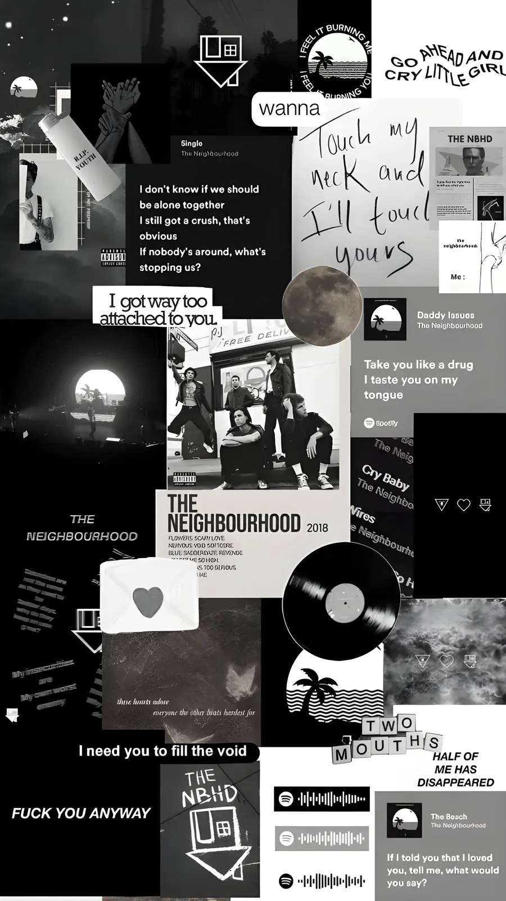
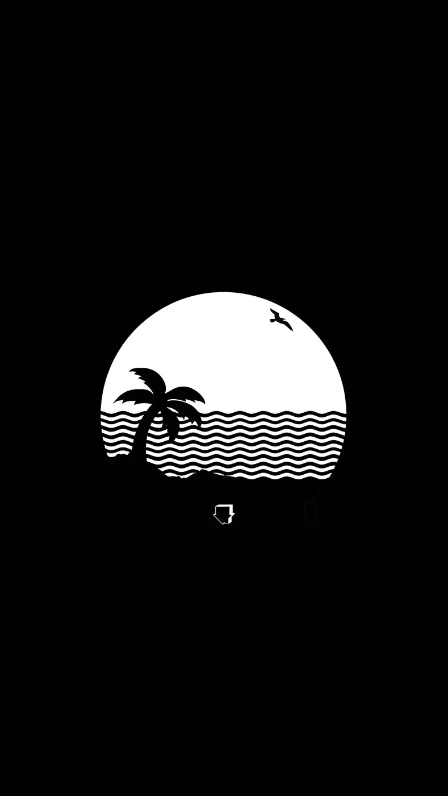
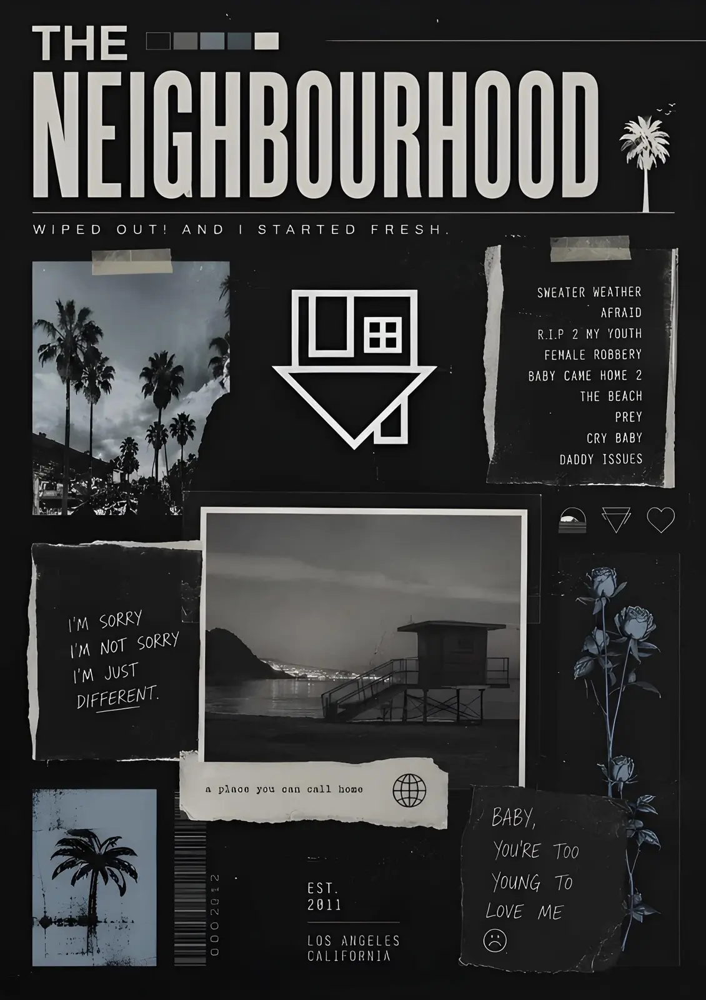
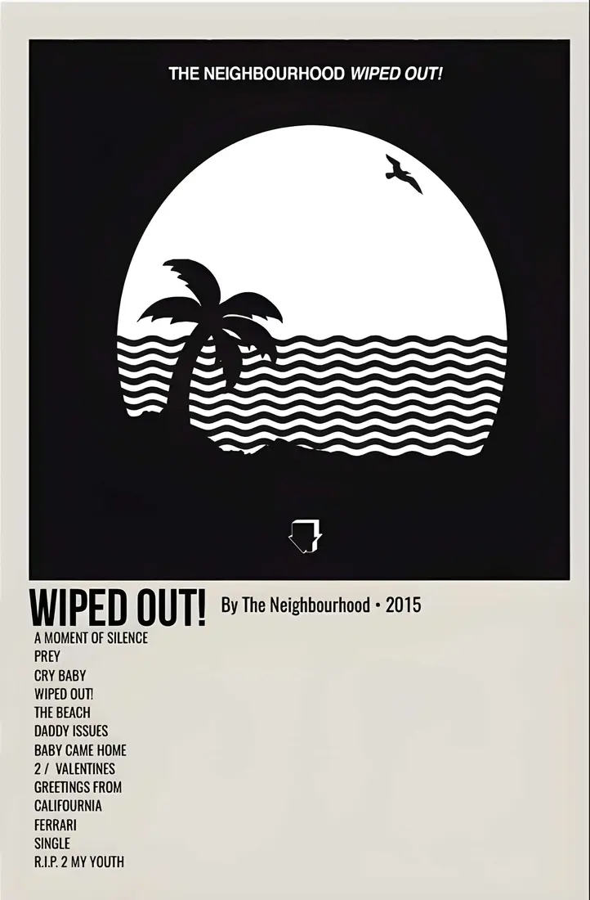
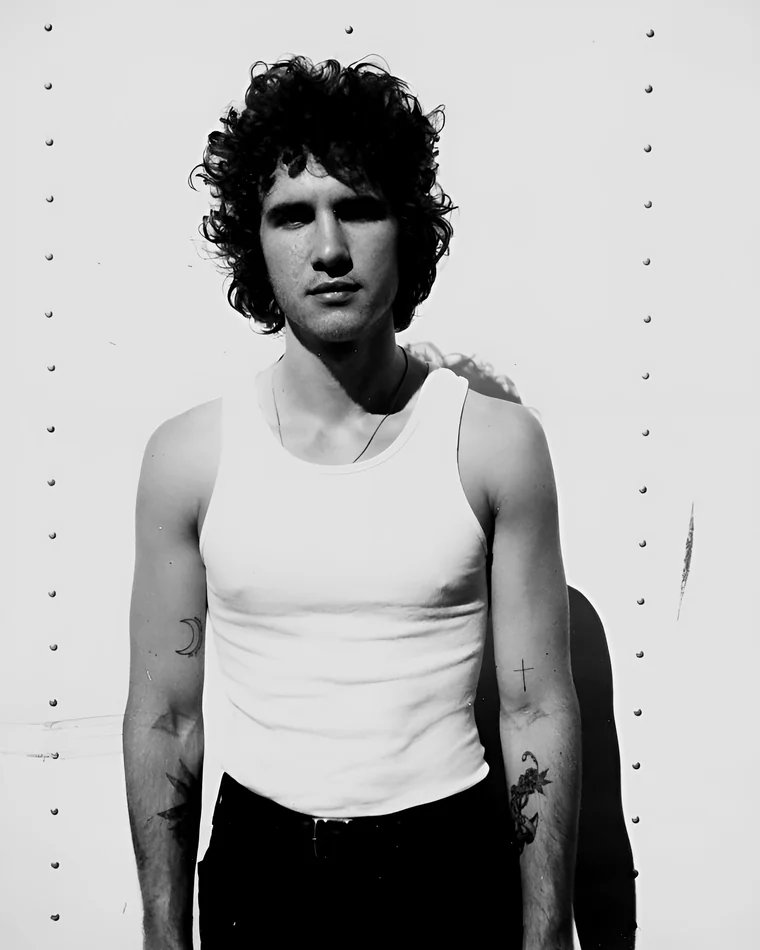
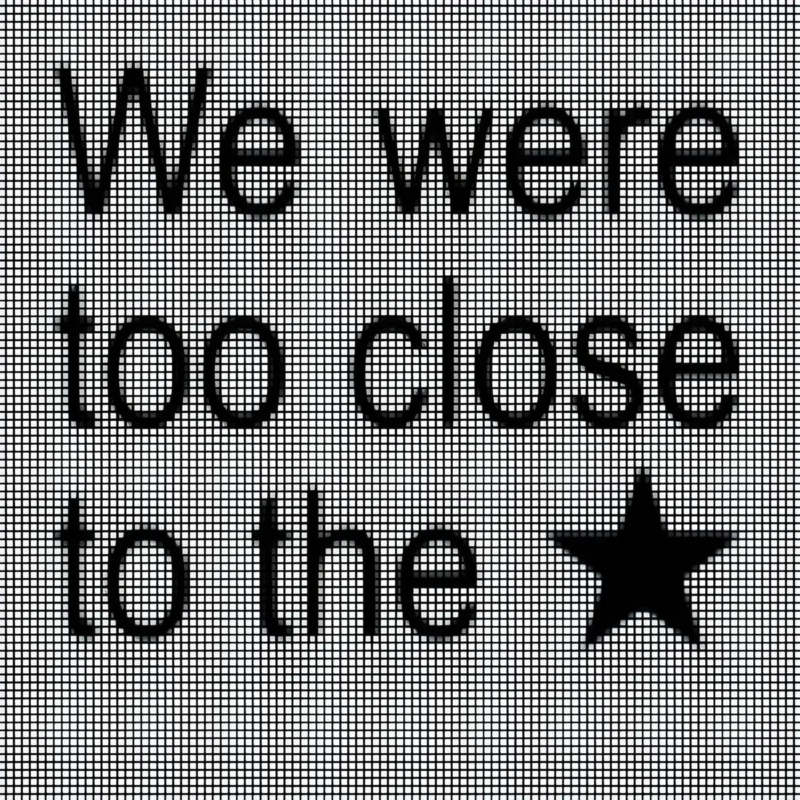
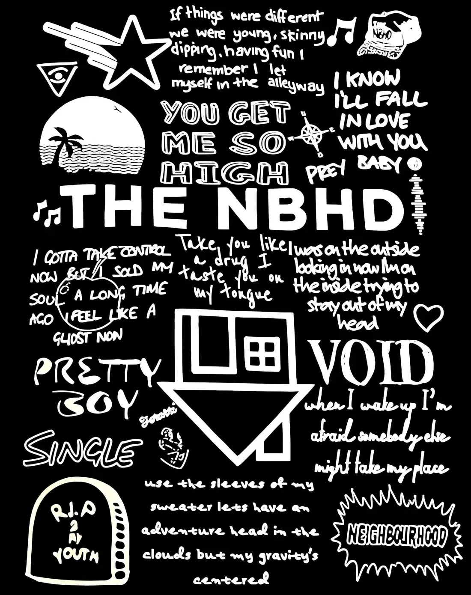

NEWBURY PARK, CA / SINCE 2011
THE NEIGHBOURHOOD
A monochrome fan archive for the songs that made California feel cold.
SCROLL TO LISTEN
01 / THE BAND
BLACK, WHITE
AND EVERYTHING
IN BETWEEN.
California alternative band formed in 2011, known for monochrome visual language and a blend of rock, R&B and electronic pop.

02 / DISCOGRAPHY
SELECT A RECORD
Каталог собран офлайн, а треклисты, обложки и 30‑секундные превью подтягиваются вживую из iTunes. Откройте релиз, затем выберите трек.


NOW PLAYINGTHE NEIGHBOURHOOD
Select a track
Wiped Out!Choose a track from a record.
03 / ORIGIN STORY
HOW IT ALL BEGAN
Откуда взялась группа, почему в названии британская «u» и как чёрно-белое правило стало фирменным знаком.
THE FOUR ERAS
TIMELINE
MYTHS & CORRECTIONS
04 / CONTACT SHEET
PORTRAIT PLATES
Кадры из архива в фирменной монохромной обработке. Подписи участников не проставлены — плёнка пришла без них.

05 / PEOPLE
FACES IN THE STATIC
Нажмите на карточку, чтобы открыть профиль участника.

THE NBHD / NIGHT MODE
“THE MUSIC
IS MY DRUG.”
REFLECTIONS ON REPEAT — 03:04 AM
06 / FAN TESTS
HOW DEEP ARE YOU IN?
Четыре теста по 15 вопросов. Позиции правильных ответов перемешиваются при каждом запуске.
Ответьте на вопросы и проверьте результат.